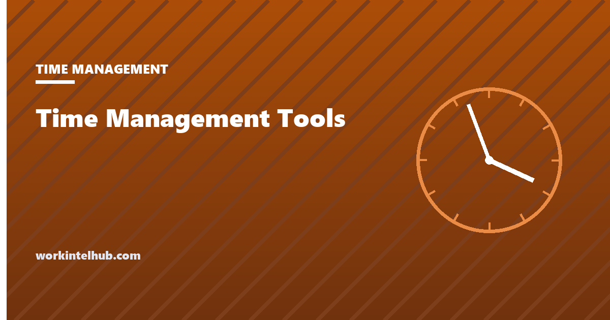

10 Best [Category] Tools of 2026, Compared

One paragraph defining the category in plain terms, so the page answers the definitional query before it starts selling anything. Say what these tools do, who buys them, and what problem they exist to solve. Keep the primary keyword in this first 100 words.
Second paragraph states the position. We take no payment for placement, run no affiliate links, and name a product only where naming it helps the reader. Where a feature or price is stated, it was checked against the vendor's own documentation on the date shown above.
The shortlist
The picks up front, so a reader who wants the answer can take it and leave. Each line names the one situation the tool suits, not a generic superlative.
- Tool One Best for small teams with no dedicated admin
- Tool Two Best for regulated environments needing an audit trail
- Tool Three Best when the team is fully distributed across time zones
- Tool Four Best for organizations already committed to one ecosystem
- Tool Five Best if you need self-hosting or data residency control
How we chose, and what we did not do
State the method honestly and specifically. How many tools were considered, what the inclusion bar was, and which claims were checked against vendor documentation on what date. Then state the limits just as plainly: what was not hands-on tested, what could not be verified, and what a reader should confirm themselves before buying.
Say the commercial position in the same block. No payment for placement, no affiliate links, no sponsored entries. If that ever changes, the disclosure appears here, above the content, not in a footer.
Comparison at a glance
A scannable table doing the work the reviews cannot: letting someone rule options out in fifteen seconds. Keep columns to the ones that actually change a decision.
| Tool | Best for | Deployment | Data export | Starting price |
|---|---|---|---|---|
| Tool One | Small teams | Cloud | CSV, API | $0.00 / user / mo |
| Tool Two | Regulated | Cloud or on-prem | CSV, API, SIEM | $0.00 / user / mo |
| Tool Three | Distributed | Cloud | CSV | $0.00 / user / mo |
| Tool Four | Single ecosystem | Cloud | Native only | $0.00 / user / mo |
| Tool Five | Data residency | Self-hosted | Full DB | $0.00 / user / mo |
The tools in detail
Every entry uses the same fields in the same order, so a reader can compare across tools without re-learning the layout each time. Consistency is what makes a long roundup usable.
Tool One
Best for small teamsWho it suits
Two or three sentences naming the specific situation this tool fits. A real reader should be able to tell in one read whether that describes them, which means naming team size, technical constraint, or workflow rather than saying it is powerful and easy to use.
Why it made the list
The one thing it does that the others do not, stated concretely. If nothing distinguishes it, it does not belong on the list, and the honest move is to cut the entry rather than pad it to reach a round number in the headline.
What it does
- Capability stated as an observable fact, not a marketing phrase
- Capability stated as an observable fact, not a marketing phrase
- Capability stated as an observable fact, not a marketing phrase
What it connects to
Integration A, Integration B, Integration C, plus an open API.
Where it is strong
- Specific strength, not a generic compliment
- Specific strength, not a generic compliment
Where it falls short
- A real limitation, named plainly
- A real limitation, named plainly
Tool Two
Best for regulated teamsWho it suits
Repeat the identical field order for every entry. The second card exists here only to show that the pattern holds and the spacing works.
Why it made the list
Placeholder rationale.
What it does
- Placeholder capability
- Placeholder capability
What it connects to
Integration A, Integration B.
Where it is strong
- Placeholder strength
Where it falls short
- Placeholder limitation
How to choose between them
The section a paid roundup cannot write. Give the reader a way to decide that does not depend on trusting the ranking: the two or three questions that eliminate most options, and the situation in which none of these tools is the right purchase.
Before you buy anything
Name the check that saves someone money. What to confirm in a trial, what to ask the vendor in writing, and the condition under which the honest answer is to buy nothing and fix the process instead.
Key takeaways
- Lead with the shortlist so the answer is not buried behind the reviews.
- Use identical fields in identical order for every entry.
- State the method and its limits before the first product name appears.
- Date every verified claim, because pricing and features move.
Frequently asked questions
Placeholder question matching a real query?
Direct answer in the first sentence, 40 to 60 words, mirrored exactly into the FAQPage JSON-LD when this becomes a real page.
Placeholder question matching a real query?
Direct answer in the first sentence, 40 to 60 words, mirrored exactly into the FAQPage JSON-LD when this becomes a real page.